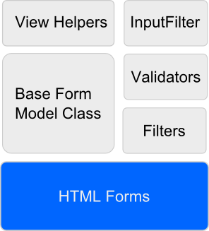
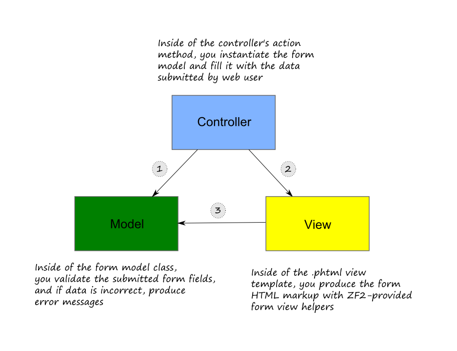

7.6. Формы и шаблон «модель-представление-контроллер»
В предыдущем разделе мы рассмотрели очень простой случая использования формы: мы подготовили шаблон представления с HTML-разметкой формы и действие контроллера, ответственное за отображение формы и вывода на экран необработанных введенных пользователем данных. Однако, использование необработанных данных в реальных приложениях имеет недостаток: мы не проверяем отправленные пользователем данные на возможные ошибки и/или вредоносный код. Ниже мы обсудим, как выполнять подобную валидацию.
При разработке сайта на базе ZF3, который использует шаблон «модель-представление-контроллер», (Model-View-Controller или MVC) функциональность формы обычно разделена на модели форм, ответственные за определение полей, фильтарацию и валидацию; и представление формы, которые обычно реализуется с помощью специальных помощников видов.
Набор функций для создания моделей форм, добавления правил валидации и использования помощников видов схематически показан на рисунке 7.8. Как видите из рисунка, за основу взят набор функций стандартных HTML-форм.
 Рисунок 7.8. Функциональность форм в ZF3
У подхода MVC к работе с формами есть следующие преимущества:
- Вы можете повторно использовать модель формы в различных действиях контроллера.
- Используя помощники видов, вы можете (частично) избежать скучной работы по подготовке HTML-разметки для визуализации формы и возможных ошибок валидации.
- Вы можете создавать одно или несколько визуальных представлений одной и той же формы.
- Инкапсулируя алгоритм валидации формы в один класс модели формы, у вас будет меньше мест в коде, где необходимо проверять введенные пользователями данных, что повышает безопасность сайта.
7.6.1. Типичный процесс использования формы
Так, вы инстанцируете модель формы в методе действия контроллера, затем извлекаете отправленные пользователем данные из PHP-переменных и передаете их модели формы для валидации. Помощники видов форм используются в шаблоне представления для генерации HTML-разметки формы. Этот процесс изображен на рисунке 7.9.
 Figure 7.9. Работа с формой в MVC-приложении
Стрелки на рисунке 7.9 обозначают направления действий:
Первым делом внутри метода действия контроллера вы извлекаете данные, отправленные пользователем, из PHP-переменных GET и POST (и возможно других). Затем вы создаете экземпляр модели формы и передаете ему отправленные пользователем данные. Работа модели формы заключается в проверке (валидации) данных на корректность, и, если что-то не так, создать сообщение (или сообщения) об ошибке для каждого недопустимого поля формы.
Затем вы передаете модель формы шаблону представления
.phtmlдля визуализации (с помощью контейнера для переменныхViewModel). Шаблон представления затем сможет обращаться к модели формы и вызывать ее методы.После этого шаблон представления использует модель формы и помощники видов, предоставляемые Zend Framework 3 для визуализации полей (и отображения возможных сообщений об ошибках валидации, созданных на этапе валидации). В результате создается HTML-разметка формы.
В последующих разделах мы обсудим эти шаги более детально.